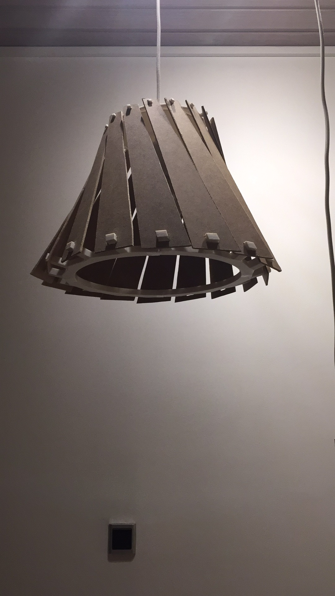
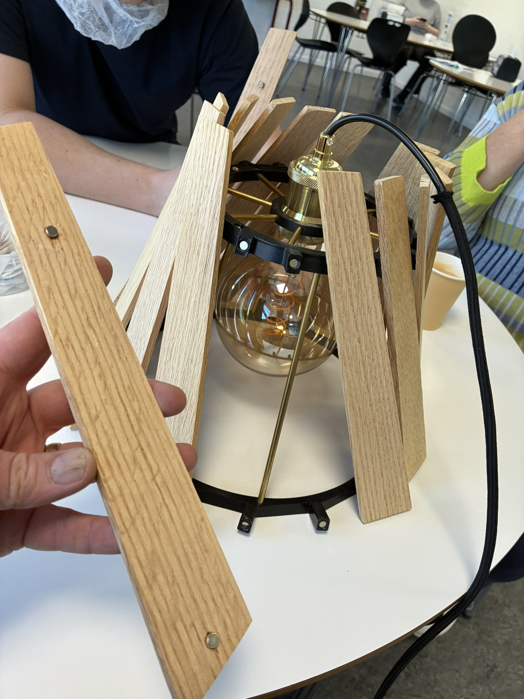
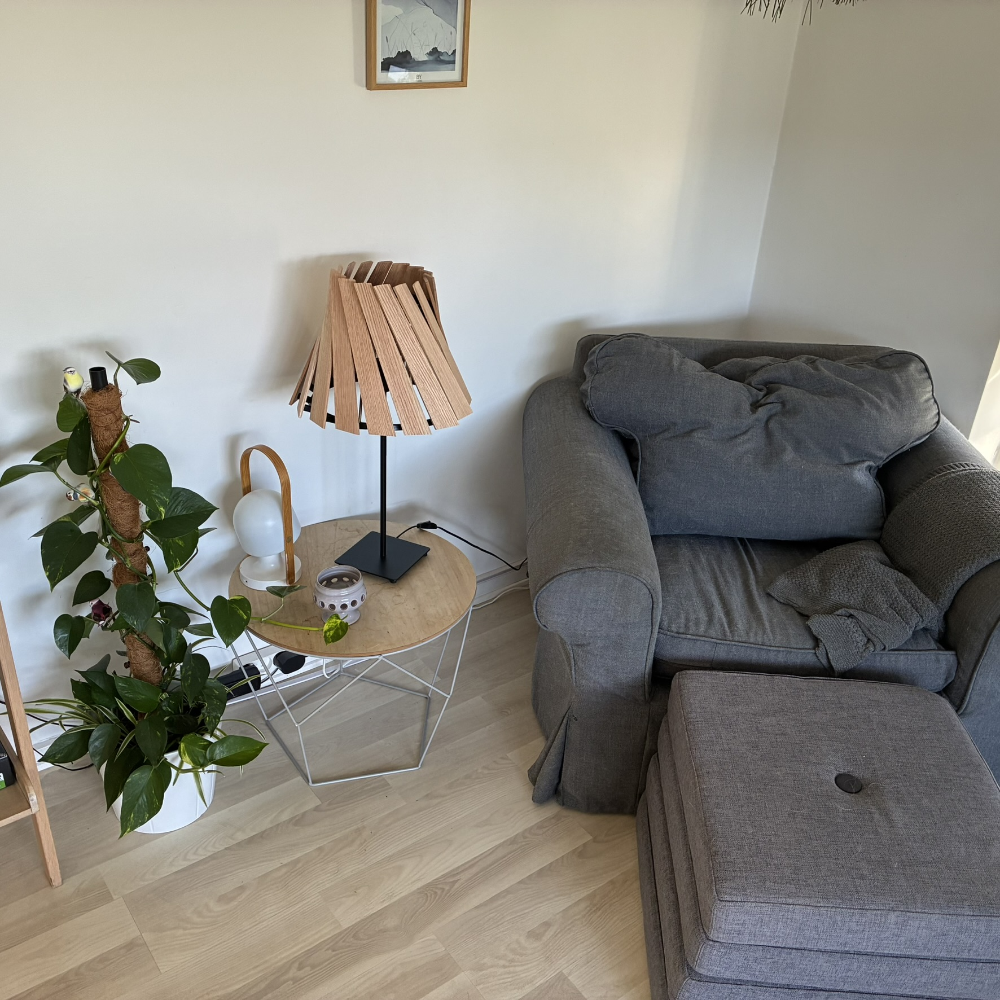

Fra Instagram-idé til færdigt produkt
Array Pendlen
Array er en håndlavet E27-lampeskærm, hvor drejede egetræslameller filtrerer lyset og giver formen et levende udtryk fra alle vinkler.
Idéen begyndte som en rendering, jeg lavede i Blender til RenderWeekly på Instagram. Den blev featured og fik så meget positiv respons, at jeg besluttede at gøre den digitale idé fysisk.
Gennem utallige digitale og fysiske iterationer — drevet af min interesse for 3D-print — er Array blevet et færdigt produkt. Skærmen passer til E27-fatninger og kan derfor bruges som pendel eller på bord- og gulvlamper.

- Fatning
- E27
- Anvendelse
- Pendel · bord · gulv
- Fremstilling
- Håndlavet
- Lameller
- Aftagelige med magneter
RenderWeekly
Den første Blender-rendering blev featured på Instagram og gav idéen det skub, der førte den ud af skærmen.
Utallige iterationer
Digitale modeller og 3D-print blev brugt igen og igen til at forfine proportioner, lys, samlinger og montage.
Håndlavet
3D-printede dele limes, slibes og males. Messingstængerne skæres og gevindskæres i hånden, og egetræ fra restproduktion høvles til lameller.
Skabt til hverdagen
Alle lameller sidder med magneter, så de kan tages af på få sekunder ved rengøring og sættes præcist på plads igen.
Udviklingen i billeder
Fra rendering til færdig lampe
Fire nedslag fra en idé på Instagram til en lampeskærm, der nu bruges som både pendel og bordlampe.


